导读：Florence 的这篇 X 长文是一本“附收据”的动效实验笔记：三段完全由 Claude Opus 5.5 用代码（three.js + Web Audio）生成的循环动画，连同每一条原始提示词和每一条追加修改都公开。核心论点是：所谓“一个提示词”是假象，把“高级/酷/现代”这类形容词换成材质、灯光、帧数、缓动曲线、弹簧阻尼比和禁用清单，再用“渲染静帧—看—按帧号改”的循环迭代，才是让 AI 动效像专业工作室作品的关键。文中还给出渲染契约、提示词模板、动效数字速查表、引擎选型与 X 导出规格。以下为全文中文翻译；提示词与代码块保留英文原样以便直接复制（较短的几条附中文译注），原视频以封面帧代替，请到 X 原文观看。
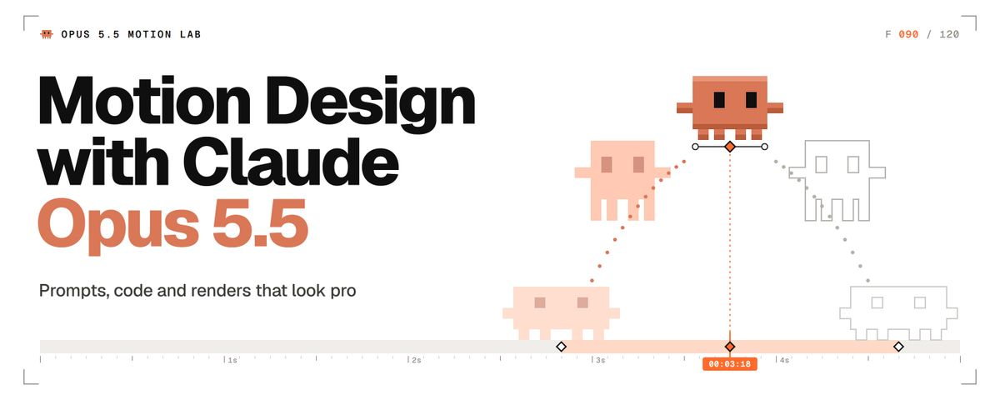
本实验室里的每一段动画都由 Claude Opus 5.5 制作，每一段都附上生成它的原始提示词，以及它需要的每一条追加指令。没有假装的“一次成型”。只有附带收据的动效设计。
自 9 月 22 日 Opus 5.5 发布以来，信息流里满是标着“一个提示词”的动效作品。有些确实只有一行。播放量最高的那支音乐视频，则是五分钟的口述加上 12 小时的自主运行。几乎没人公开中间那部分：第二条提示词、第三条，还有那句“第 84 帧的峰值来晚了”。
这篇文章就是那部分过程的实验笔记。三段由 Opus 5.5 制作的动画，画面加声音，每条提示词和每条追加指令都原样印出。让它们成立的那些数字。从空文件夹到一段可以发上 X 的循环动画的完整环境搭建。
开场镜头：一团液态铬自己流淌成标题，出自一条写满数字的提示词。
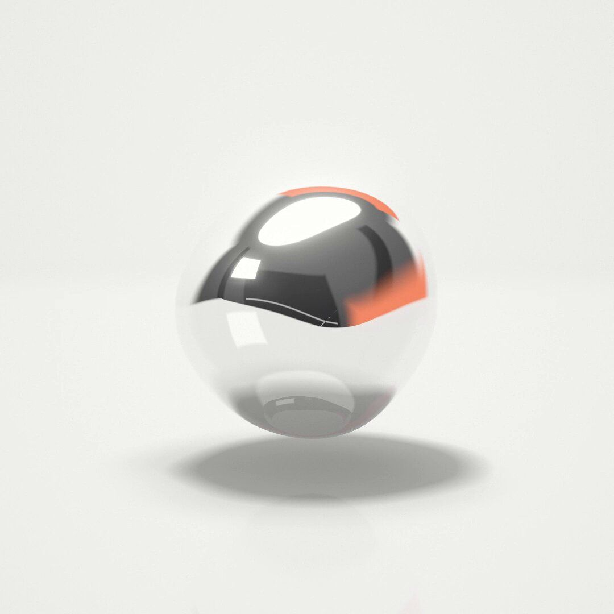
六秒、一次循环：一团铬球被压扁、拉长，再掐成 7 颗液滴，每颗液滴流进各自的字母，一道高光扫过整个词，随后字母又融回一团晃动的液球。液体是着色器里用光线步进（raymarch）绘制的单一形体，字母是真正的 three.js TextGeometry，GPU 以 60 fps 渲染每一帧，运动模糊由子帧混合而成。
原样粘贴进 Opus 5.5 的提示词：
Liquid Chrome: 6 s seamless loop, 60 fps, 1080x1080, one HTML file, three.js 0.160.0 via jsdelivr importmap only.
window.renderAt(t) sets everything from t in seconds; all motion and noise periodic in 6 s; with ?t= never start requestAnimationFrame; window.__ready after font and bake. Quarter-pixel camera jitter, 4 offsets from frac(t*60).
Raymarch blob, 7 droplets and text as one SDF in a full-screen shader. Smooth-min k 0.35, falling to 0.1 as droplets part; each droplet becomes its glyph through mix(dropSDF, textSDF, K). Text: TextGeometry "OPUS 5.5" per glyph, helvetiker_bold from the pinned examples/fonts, size 0.52, height 0.12 (r160 reads height, not depth), bevel 0.03, 10 bevel and 24 curve segments, tracking -0.04 em, period optically centered. Bake the same outlines into a 2048x512 signed distance texture on the GPU, extruded as a rounded box to match the mesh. From 3.3 to 4.7 s cross-fade to the real mesh (creased normals, 35 degrees), same GLSL, reflections traced into the SDF.
Chrome: F0 0.92, Schlick fresnel, roughness 0.04, 3 bounces.
Studio: white floor at y -0.8, soft overhead shadow, contact darkening, 6% reflection, black beyond z 4 (camera side) so letter faces reflect dark. Environment in azimuth and elevation, camera at 0: black camera-side panel 86x57 degrees, softboxes overhead (2.4) and upper left (3.0), black flags at 75 degrees left and right, a D97757 rim strip behind at 149 degrees, 24 up, intensity 1.4, a 2 degree glint strip, intensity 6, tilted 40 degrees, sweeping left to right 3.3 to 4.1 s.
Timeline:
0 to 1.2 s: blob radius 0.62 breathes 3% every 1.5 s, simplex noise 0.05.
1.2 to 1.4 s: squash 10%.
1.4 to 2.1 s: stretch 2.4x wide and pinch into 7 droplets sized by glyph area; each arcs 0.2 up to its glyph, overshoots 7%, stretches along its velocity.
2.2 to 2.9 s: droplets become letters left to right, 3 frames apart, 0.4 s each; bevels start 0.07 puffy and spring flat.
2.9 to 4.8 s: hold.
4.8 s: 6-frame swell, letters slump 0.12 and soften, drain to the center with ease-in, merge at 5.62 s with a 3-bounce wobble (14%, damping 0.25) running through frame 0.
Camera: 30 degree lens, dolly 5.6 to 7.2 by 2.6 s, push to 6.95 in the hold, back to 5.6 by 5.9 s; orbit 7 degrees each way centered on the hold; 6 degrees above.
Post: bloom threshold 1.0, strength 0.3; tone curve linear to 0.9, then a soft shoulder; vignette 7%; grain 1.5% seeded by frame index.其中一行来自一个真实的 three.js 陷阱。在 r160 里，TextGeometry 读取 “height” 作为挤出深度，而传入的 “depth” 参数会被覆盖成 50，于是本应 0.12 深的字母会变成 50 深。锁定版本、写对参数名，陷阱就消失了。
追加指令：10 条，下面原样印出。第一版就已经有了完整的编排：液球到液滴到字母再回去。第 1 到 5 条修的是静帧和测量暴露的问题：看起来像白色塑料而不是铬，高光把 P 抹掉了，倒角让字母粘在一起，液滴飞出画面。第 6 到 9 条来自逐帧检查 12 个过渡，抓到了诸如第 85 帧液球上突然冒出一个鼓包之类的问题。最后一条加了一条地平线，让字母正面有东西可反射，这样它们读起来才是铬，而不是扁平的炭灰色。
1. It reads as white plastic, the letter faces only see the black floor so the glint never shows, and the mesh caps reflect bent shards. Make the studio dark (0.1 gray) with only a white cyc behind the subject, 140 degrees wide, from 10 below to 40 up. End the white floor at z 4 so camera-side rays reach the black panel. Flatten the mesh cap normals. Rim strip 12x40 degrees. Blob noise frequency 1.0.
2. The glint is a flare that erases the P: make it 0.6 degrees wide at intensity 3. The rim never reaches the letters: move the D97757 strip behind and up (165 degrees, 42 up, 70x16 degrees) and add a soft D97757 kicker on the right, azimuth 55 to 125, elevation -16 to 10, so every right-facing bevel catches it.
3. The 0.03 bevels fuse every letter pair. Space the glyphs by their measured outlines, 0.09 apart and 0.26 for the word space, and hold the camera at 7.8, pushing to 7.55. The mesh speckles on its bevels: shade it with the SDF gradient so it matches the raymarched text.
4. The outer droplets leave the frame by 8 px around frame 112. Start them at 40% of their glyph position, ease the flight with u^2.4 so the 7% overshoot lands at 1.97 s, and dolly from 1.2 to 2.5 s.
5. While the letters form they look like camouflage and the merged blob looks like crumpled foil. Surface ripple 0.008 at frequency 3.2.
6. A bump pops onto the blob at frame 85. Grow the droplets from radius -0.4 over 1.2 to 1.65 s and regrow the blob from -0.4, so their smooth-min pull fades in.
7. mix(sphere, letter) passes through flat coins. Let each droplet pour into its glyph instead: bake one SDF channel per glyph, reveal each letter inside a sphere growing from its droplet (smooth max 0.05, ease-out, 0.4 s), shrink the droplet into it, join them with smooth-min, and start the puff spring only once the letter is full (damping 0.55, 3 Hz). Melt in reverse, draining from 5.2 s.
8. The glint reaches the O late and leaves the last 5 early. Make it touch the O at 3.3 s and clear the last 5 at 4.1 s (calibrated sweep: azimuth -0.083 to 0.302).
9. The letters vanish before their drops exist and the merged ball inflates. Regrow the drops first (4.88 to 5.1 s, 1.15x glyph size), retract the letters after (5.0 to 5.35 s), and grow the central blob from 5.15 s.
10. The letter faces read as flat charcoal. Add a thin 0.5 horizon strip at -6 degrees inside the camera-side panel, and soften the floor's end over z 3.6 to 4.0.然后是声音，又一条提示词。Opus 5.5 听不见，所以它按帧号来配乐：每个声音都用 Web Audio API 在代码里合成，不用采样，每个音效都落在对应画面之后 1 帧。声音的追加指令有 5 条，全部来自对解码后音频的测量，没有一条来自“听”：最初的打击音峰值晚了 8 到 11 毫秒，各音效相对底层音乐的电平不均，限幅器压扁了最后那声“咕噜”，编码器又在接缝处加了 16 毫秒的填充。
# Sound prompt
Score this seamless 6 s loop (360 frames, 60 fps). Synthesize everything in code with the Web Audio API, no samples, no downloads. Each hit lands 1 frame after its visual event.
Bed: 120 BPM, four 3/4 bars of 90 frames starting on frames 67, 157, 247 and 337. Kick on 67, 247 and 337, offbeat shaker only where no hit plays, sub and pad on Bm, G, A, D.
Events: squash inhale peaking at 84, stretch glide 84 to 112, pinch bloops at 112, 113, 114 and 120, pour bloops rising through D major pentatonic at 136, 138, 141, 145, 147, 150 and 153, metallic ting at 200 (partials under 8 kHz), shimmer panned left to right until 245, liquid swell from 288 peaking at 303, drips at 309, merge blups at 319, 321, 322 and 325, slurp into a gloop at 337 wobbling at 2.4 Hz.
48 kHz stereo WAV, about -14 LUFS, peak -1 dBTP, no click at the seam. Mux into the MP4.
# Sound follow-ups (5), exactly as they were sent
1. Measured on the isolated hits: the kick and the gloop peak 8 to 11 ms late (a 4x waveshaper and sines that start at phase 0), and the levels over the bed are uneven (ting +10 dB, gloop +1 dB, drips -8 dB, dot drop +1 dB). Build every tonal hit as a buffer whose attack ends on a cosine crest at exactly (F + 1) x 800 samples, with no waveshaper. Put every hit, or pair of hits on the same frame, 3 to 6 dB above the bed (K-weighted, first 60 ms). The mix loses 4.5 dB through a 150 Hz high-pass: cut the sub 4 dB, the kicks 1.5 dB and the kick under the gloop 4 dB, and raise the pad 1.5 dB.
2. Timing is exact now. The hits sit 6.5 to 9 dB over the quieter bed: trim the hit bus 2.5 dB, then the two pinch pairs 1.4 dB, the U and S pinch 1 dB, the swell 1.2 dB and the last pour bloop 0.5 dB, and raise the drips 2.5 dB and the gloop 3 dB, so every hit reads 3 to 6 dB over the bed.
3. The limiter takes 3.4 dB off the gloop because all its partials and the kick crest on the same sample. Put the gloop's even harmonics in sine phase and lower the kick under it 2.7 dB, so the limiter stays under 1.5 dB and the gloop keeps 3 to 6 dB over the bed.
4. Sine-phase harmonics moved the gloop's biggest waveform peak 4 ms after its frame. Keep every gloop harmonic in cosine phase so the peak is on sample 270400, set the 2nd harmonic to 0.2 and the 3rd to 0.08, drop the 4th, and lower the gloop 0.5 dB.
5. The MP4's audio runs 16 ms of codec padding past the video, so the file starts on a hard step and a looping player stops the sound hard at 6.000 s, plays 16 ms of silence and restarts hard. Keep the seamless loop as the master WAV for the two-loop post, and for the single-loop article MP4 add a 2 ms raised-cosine fade to the first and last 96 samples only.结果：从第一条提示词到完成循环大约 2 小时，包括 12 次过渡检查，声音另外约 45 分钟。结束循环的那段晃动一直延续穿过第 0 帧，所以接缝永远不会露出来。
那段循环里的每一颗液滴、每一盏灯、每一次运镜，都来自提示词或追加指令里的一个数字。这就是整个实验室浓缩在一个循环里。
本文内容：
- 实验 1：同一个 3D 产品镜头，模糊提示词与导演式提示词并排对比
- 原理：为什么 Opus 5.5 写的是代码而不是像素，以及这对你有什么好处
- 从零搭建：免安装，Mac 或 Windows
- 提示词解剖：一条导演式动效提示词需要哪些行
- 数字：缓动、弹簧、时长、错峰、节拍网格
- 实验 2：在 3D 吉祥物身上演示预备动作、挤压与拉伸、重叠动作、跟随动作与弧线
- 实验室循环：Opus 5.5 如何检查自己的帧
- 器材：Remotion、HyperFrames、GSAP、Motion、Three.js
- 最后一公里：声音、完美循环、为 X 导出
- 修复：你一定会遇到的故障，每个都附修复提示词
不需要 After Effects。一个浏览器加 Claude 就足以起步。
实验 1：模糊提示词 vs 导演式提示词
发布周被复制最多的动效提示词只有 26 个词：做一段 15 秒的作品集短片，证明“你是一个多么不可思议的动效设计师”。它出自 kirill sh，他在 9 月 24 日把 Opus 5.5 和 GPT 6 Astra 的结果并排发出，账号当时只有 885 个关注者。播放量超过 180 万。
kirill sh（@shneural）：after Opus 5.5 it actually hurts to look at anything GPT 6 Astra designs gave both models the exact same prompt: "make a dynamic 15-second motion graphics video that shows what an incredible motion d…
在 X 上查看该帖 ↗
这是原帖。几天内出现了大量复刻。它是很好的模型演示，因为主题就是模型自己：没有需求可以偏离，所以怎么做都不会错。
现在把同一招用在你自己的产品发布上。作品集短片是一种规则已知、没有甲方的类型。而你的产品、你的文案、你的节奏都可能做错，一句话的提示词对这些只字未提。
另一个极端是播放量最高的 Opus 5.5 音乐视频，作者 Donald。功劳要归给原作者：歌曲《Claude-Pop》及其第一版视频出自 deckard，发布于 9 月 9 日，那时 Opus 5.5 还不存在。Donald 做的是 Opus 5.5 版本。
donald（@donaldjewkes）：I made this with one prompt using Opus 5.5 I spoke to my computer for 5mins, claude worked for 12 hours, and I woke up to this full prompt:…
在 X 上查看该帖 ↗
它突破了 360 万播放。Donald 称之为一个提示词，但他在同一条帖子里说，他对着电脑说了五分钟，Claude 干了 12 个小时。所谓一个提示词，是一段口述需求加 12 小时自主工作：真正出力的是导演意图。
于是实验室做了一次对照实验。同一个模型、同一个主体（一副无线耳机），同一行技术约束：一个 HTML 文件、three.js、每侧 960x1080、6 秒循环。只改变导演指令。
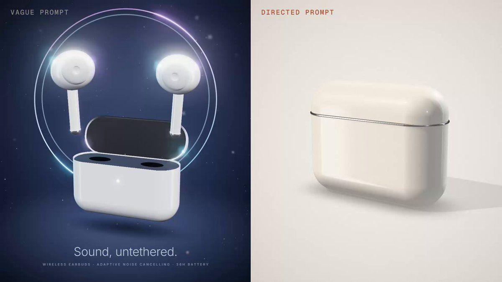
读提示词之前，先把两边各完整看一遍。左边是三个形容词换来的东西。右边是 448 个词的导演指令换来的东西。
提示词 A，模糊版（左侧）：
Create a cool 3D product animation for a pair of wireless earbuds. Make it look premium and modern. One self-contained HTML file using three.js, 960x1080, 6-second loop.（译：为一副无线耳机做一段酷炫的 3D 产品动画。让它看起来高级、现代。一个使用 three.js 的自包含 HTML 文件，960x1080，6 秒循环。）
提示词 B，导演版（右侧）：
GOAL: a studio product film for wireless earbuds: case opens, buds rise to the viewer, everything clicks shut.
OUTPUT: one self-contained HTML file, three.js 0.160.0 from jsdelivr (importmap), 960x1080.
TIME: 6-second loop, 60 fps = 360 frames, 120 BPM (1 beat = 30 frames). Hits land on beats.
MODEL (1 unit = 1 cm, primitives with bevels): case 6.0 x 4.6 x 2.2, 1.0 edge radius, split at 3.3, back-hinged lid, 0.06 split bevel, 0.045 chrome wire around the seam. Inside: D97757 deck, two dark elliptical wells. Buds: ellipsoid head 1.6 x 1.5 x 1.5, lathed silicone tip, 1.6 oval stem with a chrome end cap, dark grille. Seated heads sit flush with the deck.
LOOK: satin ceramic white F4F1EC (roughness 0.38, clearcoat 0.35), chrome (metalness 1, roughness 0.05), D97757 on the deck only, ink 1C1B1A, tips E4E0DA. Backdrop F0EDE8 center to DEDAD3 corners, dithered. Key FFF4E8 3.0 upper front left, soft shadows; fill E8EEF5 0.6 low right; rim FFFFFF 4.0 upper back right. Reflections: PMREM studio built in code (warm gray dome, overhead and key softboxes, rim strip). Contact shadows, opacity 0.55. Neutral tone mapping, 8% vignette, 2% grain seeded per frame.
SHOTS:
0.0 to 0.5 s: a 2.4-wide studio strip (from 5.5 s) sweeps left to right, glinting across the closed lid and seam.
0.72 to 0.95 s: anticipation: lid presses 1.5 degrees shut, case squashes 2%, hold 3 frames.
1.0 s: lid springs to 100 degrees (damping 0.6, about 10% overshoot, settled by 1.4 s).
1.5 s: buds rise 4.0 out of the wells, right first, left 4 frames later (damping 0.7). From rise frame 8 they tilt 14 degrees outward and turn 35 degrees to camera on a looser spring (damping 0.5): stems swing through and settle.
2.0 s: camera push-in.
2.4 to 4.0 s: hold, buds float 0.05 on a 1 s sine. 3.0 s: second glint crosses the buds.
4.0 s: buds straighten (0.2 s) and descend (easeInOutCubic, 0.45 s), seating with a 0.05 magnetic dip.
4.75 s: lid falls (easeInCubic), shuts exactly at 5.0 s, bounces 3 degrees, settles by 5.3 s; case recoils 1.5%.
5.5 s: next glint starts.
CAMERA: fov 30, never parked. Azimuth 34 to 10 degrees from 5.6 s to 4.0 s (easeInOutSine), back by 5.6 s (easeInOutCubic). Distance creeps 21 to 20.2, pushes to 16 at 2.0 s (easeOutExpo, 0.8 s), returns 4.0 to 5.6 s (easeInOutCubic). Buds up: elevation 12 to 19 degrees, target height 2.3 to 4.2.
BANNED: purple or blue gradients, glow orbs, bloom, neon, lens flares, particles, generic spinning turntables, dark backgrounds, text.
QA: renderAt(t) draws exactly time t, seeded noise only. Stills around every hit; frame 359 flows into frame 0.追加指令：左侧 0 条，这是有意为之。它是一个只看过提示词 A 的独立上下文的首次输出，未经修改。结果是深海军蓝的太空背景、发光的光环、泛光、粒子、旋转的耳机，外加一句编造的广告语：几乎就是提示词 B 的禁用清单。右侧：4 轮评审共 15 条追加指令，下面原样印出。标签和分屏是渲染之后加上的。
# Round 1, after the first build (stills at 0, 1.25, 2.9 and 4.9 s)
The white case melts into the backdrop and the chrome reads gray. Drop the studio dome to about a third and push the softboxes, so the unlit sides fall off and the chrome shows dark and bright bands.
The open lid reads as a flat slab. Hollow it: 0.16 rim, 0.62 deep cavity, 0.22 fillet at the ceiling.
The round dark grille reads as an eye. Make it a slim slot.
Two dark marks poke through the bottom of the case: the well floors at 0.3 sit outside the bottom arc, which insets the wall by 0.29 at that height. Raise the floors to 0.5.
The deck reads salmon. Roughness 0.7.
# Round 2, after measuring pixels
Front and top are the same value and the right side vanishes into the backdrop. Key to (-7, 12, 8), rim to (2, 8, -12), still upper front left and upper back right. Overhead softbox 2.2, exposure 0.8.
The glint is a flood light: strip on vs off changes 178,864 pixels because the 60-tall strip lights the whole face. Keep the strip in reflections only (a second PMREM for the specular lookup, the static studio for diffuse) and go back to the 2.4 width from the brief.
Exposure 0.9 and key softbox 4.5 so the ceramic reads white. Deck specular 0.3 so the grazing reflection stops washing out D97757.
Give the wells a 0.07 machined round-over.
The buds read as mouse heads. Move the stem to the outer side, replace the ball tip with a short nozzle and a flattened silicone cap, and move the grille off the head (it read as an eye twice) onto the stem.
Crane faster: reach the high target by 2.3 s, so the heads keep headroom during the push.
# Round 3, after isolating each glint
The first glint is too shy for a hook. Clearcoat roughness 0.08, strip peak 24, and shift the sweep to -80 to 0 degrees so the band is mid-face on frame 0.
The second glint flashes the whole lid cavity (207,791 pixels at 3.3 s) because the strip crosses the mirror direction of the flat faces. Raise it to 8 to 61 degrees elevation, 4.8 wide: only the curved heads and stems catch it.
The hold parks the camera: add a 0.4 dolly creep from 2.8 to 4.0 s. Float the left bud 4 frames behind the right, like its rise.
# Round 4, frame-perfect pass
The anticipation holds 4 frames (57 to 60), not 3: the spring starts at rest exactly on 1.0 s, so the beat frame is still the pressed pose. Release half a frame early (59.5/60 s): frames 57 to 59 hold, including their motion-blur subframes, and frame 60 is the first open frame.声音，同样规则的又一条提示词：分屏共用一条音轨，每个音效都落在导演版一侧的节拍上。声音追加指令 12 条、分 4 轮，全部来自测量：第一版混音把 80% 的能量放在 60 Hz 以下，而手机扬声器在那里什么都放不出来；各音效只比底层音乐高 0.5 到 1.6 dB。
# Sound prompt
Score the A/B video. Synthesize everything in code with the Web Audio API, no samples, no downloads. 120 BPM, 6 s loop, 360 frames at 60 fps. Each hit lands 1 frame after its visual event, and so does the bed.
Bed: kick every 60 frames, 16th shaker, bass and pad F, B flat at 120, G minor at 240, C at 300.
Right half only:
44 to 60 reverse swell.
60 lid snap: click, 880 Hz body, 120 Hz thump.
90, 94 magnetic pops, air lift to 119.
96 to 120 push-in swell.
180 to 216, 330 to 30 glint shimmer.
240 to 267 falling swish, 270 seat click.
285 to 300 whoosh into the shut: click, 200 Hz thock, 70 Hz thump; ticks 306, 312.
Hits 3 to 6 dB over the bed, nothing above 8 kHz, mono-safe. Render twice, keep the second pass. 48 kHz stereo WAV, about -14 LUFS, peak -1 dBTP. Mux into the MP4 and check every hit in its decoded audio.
# Sound follow-ups (12), exactly as they were sent
# Round 1, after measuring the first render (80.6% of the energy under 60 Hz, 3.5% in 150 Hz to 6 kHz, median 58 Hz; hits 0.5 to 1.6 dB over the bed; bodies peaking 2.5 to 5 ms after the frame)
1. The sub buries everything. Play B flat, G and C an octave higher (117, 98, 131 Hz), open the bass to 900 Hz, shorten the kick to 80 ms and give it a 190 Hz knock. Raise the pad 5 dB and every hit 6 dB, ticks 6 and 10 dB under the shut.
2. Start every body and thump in cosine phase with a 0.5 ms attack, so the first waveform peak sits on frame + 1.
3. Give the push-in swell a clear peak: 60 ms exponential rise into frame 121, then a 25 ms drop into the camera tail.
4. Duck the bed 4 dB from the shut through tick 2 (frames 301 to 313).
5. Remove the DC: subtract each channel's loop mean.
# Round 2, after measuring the second render (full mix -14.0 LUFS but only -22.9 LUFS in the 200 Hz to 6 kHz phone band; hit stem minus bed stem, K-weighted: snap -0.3, pops -3.1 and -5.2, seat -6.9, shut +2.6, ticks -0.8 and -4.3, push-in -9.3 dB; kick peak 5 ms and snap thump 2.4 ms after frame + 1)
6. The bass still carries the loudness. Drop its sine to a third, open the saw to 1200 Hz, bass 2 dB down, pad 4 dB up and brighter (1600 Hz).
7. Hits to 3 to 6 dB over the bed: push-in swell +8 dB, seat click +6 dB, pops +4 dB, ticks 4 and 8 dB under the shut.
8. Phase every tone so its first waveform peak lands exactly on frame + 1, the kick included (cosine start, 1 ms attack).
# Round 3, after measuring the third render (phone band -17.5 LUFS against -14.0 full; phone-band hit minus bed: snap 6.4, pops 5.6 and 3.5, seat 2.3, shut 8.4, ticks 3.0 and 1.8, push-in 3.0 dB; the kick's first peak is on frame + 1 but its wider second lobe is 10% louder, 2.5 ms later; limiter up to 4.4 dB)
9. Give the kick a 3 ms transient (its level falls to 65% within 3 ms of frame + 1) and the knock 3 dB more, so its largest peak is the first one.
10. Shut 2.5 dB down with the ticks kept where they are (tick 2 then 3 dB up), seat click +2 dB, push-in swell +2 dB.
11. The kick's second lobe is still 6% louder: the knock's negative half lands on it. Knock decay 4 ms, kick attack 0.5 ms. Tick bodies decay in 12 ms so earlier tails cannot flip their lobes.
# Round 4, after decoding the muxed article MP4 in Chrome (offset -0.002 ms, every hit 0.0 to 1.3 ms after frame + 1, but the AAC encode lifts the true peak from -1.3 to -0.4 dBTP)
12. Limit the WAV to -2.2 dBTP so the decoded MP4 stays under -1 dBTP; keep -14 LUFS.结果：左侧约 30 分钟，右侧约 90 分钟（含评审轮次），声音另外约 90 分钟。最后一条画面意见正是只有逐帧检查才能抓到的那种错误：节拍上多停了一帧。
A 与 B 之间改变了什么：
- “高级”变成了材质：粗糙度 0.38、清漆 0.35 的缎面陶瓷，粗糙度 0.05 的铬，Claude 橙只用在内衬上。
- “酷”变成了影棚：主光、补光和轮廓光，颜色与强度都精确给定，反射来自代码搭建的影棚，柔和的接触阴影。任何地方都没有辉光。
- “现代”变成了摄影机：30 度视场角，一台永不停驻的摄影机，从 34 度到 10 度的环绕，以及 2.0 秒处一次 easeOutExpo 推进。
- “动画”变成了节拍与弹簧：120 BPM，盖子以阻尼比 0.6 弹开前有 3 帧预备动作，随后耳机以 0.7 升起，并以更松的 0.5 做跟随动作。
- 默认值被点名：泛光、辉光球、霓虹、粒子、旋转展台、深色背景和文字，逐一点名禁用。左侧几乎把它们全都展示了一遍。
形容词就是默认外观藏身的地方。你每把一个形容词换成一个数字，就从模型手里收回一个决定。
Claude Opus 5.5 究竟如何做动效
Opus 5.5 输出的是文本。信息流里的每一段动效视频都是一个绘制帧的程序，由浏览器录制下来。OrcaRouter 的 Gideon Frost 用一句话概括：“Claude Opus 5.5 不生成像素。它写出绘制像素的代码。”
实践中这个程序通常就是一个 HTML 文件。在浏览器里打开就能播放。用无头浏览器打开它，在每一帧冻结、保存 PNG，再由 ffmpeg 拼成 GIF 或 MP4。
用代码而非像素，带来三个你可以利用的结果：
- 每一帧都可复现。Eric Kang 在 Hugging Face 博客上的规则：“每个像素都是 t 的纯函数。”把第 84 帧渲染两次，得到的是两张相同的图。
- 修改很便宜。改一个数字再重新渲染即可。不必重新抽一次视频模型然后祈祷。
- Opus 5.5 能检查自己的作品。Anthropic 称，即使在最低的推理强度下，它读密集图表也比 Opus 5 在最高强度下更准，并且更擅长看出同一张图两个版本之间的变化。动画的联系表（contact sheet）恰好就是这类图像。
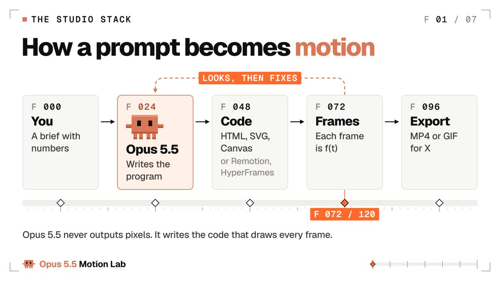
Kevin Ngo（@kevin_t_ngo）：Claude Opus 5.5 drew every frame of this animation in JavaScript. Everyone in town sends Claude their requests, but one girl sends a question instead: "What do you love?"…
在 X 上查看该帖 ↗
Kevin Ngo 在发布当天发帖：“Claude Opus 5.5 用 JavaScript 画出了这段动画的每一帧。”这是一个 28 秒的故事，全镇的人都在给 Claude 发请求，播放超过 64 万。代码绘制的帧同样可以承载角色和故事。
渲染契约。把它粘在任何动效提示词下面，让每一帧都能被渲染、检查和修复：
# The render contract: paste it under any motion prompt
Output one self-contained HTML file. Only the libraries the prompt names, pinned to a version.
No network requests except fonts and those pinned libraries.
Every frame must be a pure function of time t, in seconds.
If JavaScript drives any motion, expose window.renderAt(t) that draws exactly that frame.
Animate with CSS keyframes, the Web Animations API, SVG, Canvas 2D or WebGL.
No Date.now, no setTimeout or setInterval starts, no unseeded Math.random.
Loops: render frames 0 to N-1 only, and frame N-1 must flow into frame 0.（译：只输出一个自包含 HTML 文件，只用提示词点名的库并锁定版本；除字体和这些库外不发网络请求；每一帧必须是时间 t（秒）的纯函数；若由 JavaScript 驱动动画，暴露 window.renderAt(t) 精确绘制该帧；用 CSS 关键帧、Web Animations API、SVG、Canvas 2D 或 WebGL 制作动画；不用 Date.now，不启动 setTimeout/setInterval，不用无种子的 Math.random；循环只渲染第 0 到 N-1 帧，且第 N-1 帧必须衔接到第 0 帧。）
每一行都堵住一种渲染出错的方式。时钟或定时器会让第 84 帧每次运行都不一样。无种子的随机数会让形状逐帧抖动。
渲染循环的第 N 帧，等于把第一帧显示了两次，这就是接缝处的卡顿。三者都在文末的修复表里，因为它们每一个都至少会找上你一次。
从零搭建 Opus 5.5 实验室（免安装，Mac 或 Windows）
三条路。按你愿意安装多少东西来选。
路径 1：免安装，在 Claude 应用里
- 打开 Claude，在模型菜单中选择 Opus 5.5。
- 粘贴本文开头的开场镜头提示词。
- Claude 写出 HTML 并在预览面板中播放。
- 用帧号提修改，例如“第 84 帧的冲击峰值晚了，提前 2 帧”。
- 下载文件，在 Chrome 中打开并录屏（Mac 上用 Cmd+Shift+5，Windows 上用截图工具的视频模式）。
应用里的一个小技巧：让它在角落加一个帧计数器，再加一个按空格暂停的功能，这样你的意见就能点名到具体帧。最终录制前把两者都去掉。
录屏用来发第一条帖子没问题。但它不是逐帧精确的，还可能掉帧，所以要放进作品集的东西，请用路径 2 或 3。
路径 2 和 3：Mac 或 Windows 上的 Claude Code
Claude Code 可以渲染帧、打开帧并修改代码，无需你来回复制粘贴。用 Anthropic Claude Code 文档里的一行安装命令装好它，然后搭建实验室：
# macOS: Node, ffmpeg and a headless browser (Claude Code already installed)
brew install node ffmpeg
mkdir motion-lab && cd motion-lab
npm init -y
npm i -D playwright
npx playwright install chromium
claude # then type /model and pick Opus 5.5# Windows 11, PowerShell: the same lab (open a NEW terminal after winget)
winget install OpenJS.NodeJS.LTS
winget install Gyan.FFmpeg
mkdir motion-lab; cd motion-lab
npm init -y
npm i -D playwright
npx playwright install chromium
claude # then type /model and pick Opus 5.5两点 Windows 说明。Windows PowerShell 5.1 没有 &&，所以命令里用的是分号。如果 PowerShell 拒绝运行 npx，改输 npx.cmd。
然后把这个渲染器保存为 render.mjs。它在无头浏览器中打开你的 HTML，在每一帧冻结并保存 PNG。它用 pathToFileURL 构造文件 URL，所以 Windows 路径也能用。
// render.mjs usage: node render.mjs anim.html 6 24 (file, seconds, fps)
// Freezes the page at t = i / fps and saves every frame as a PNG.
import { chromium } from 'playwright';
import { pathToFileURL } from 'node:url';
import { mkdirSync } from 'node:fs';
const [file = 'anim.html', secs = '6', fps = '24'] = process.argv.slice(2);
const FPS = Number(fps), N = Math.round(Number(secs) * FPS); // frames 0 to N-1
mkdirSync('out/frames', { recursive: true });
const browser = await chromium.launch();
const page = await browser.newPage({ viewport: { width: 1200, height: 675 } }); // your canvas
await page.goto(pathToFileURL(file).href, { waitUntil: 'networkidle' });
await page.evaluate(async () => { await document.fonts.ready; });
for (let i = 0; i < N; i++) {
await page.evaluate((t) => {
if (window.renderAt) window.renderAt(t);
document.getAnimations().forEach((a) => { a.pause(); a.currentTime = t * 1000; });
}, i / FPS);
await page.screenshot({ path: `out/frames/${String(i).padStart(4, '0')}.png` });
}
await browser.close();
// Then turn the frames into a video:
// ffmpeg -framerate 24 -i out/frames/%04d.png -c:v libx264 -pix_fmt yuv420p -crf 18 -movflags +faststart out/anim.mp4一条命令 node render.mjs anim.html 6 24，144 张 PNG 就落进 out/frames。底部那行 ffmpeg 把它们转成 MP4。每一帧都是精确的，因为每张 PNG 都是页面在某个精确 t 上的冻结，无论你的机器多慢。
本实验室的 3D 展示作品用的是同样的渲染思路，外加两项升级。浏览器在真实 GPU 上渲染（这里是 RTX 4060 Ti）而不是软件渲染，帧率 60 fps。并且每个输出帧都是把分布在半帧时间内的若干子帧在线性光空间中平均混合，这正是 180 度电影快门记录运动模糊的方式。
从此你很少需要自己敲命令。告诉 Claude Code “用 render.mjs 渲染 anim.html，打开第 0、24、48 帧，在改任何东西之前先告诉我你看到了什么”，它就会从那里开始跑这个循环。
再说推理强度设置。Opus 5.5 默认是 medium。Anthropic 称，medium 在其编码和知识工作评测上持平或超过 high 档的 Opus 5，并建议把 xhigh 和 max 留给你实测有收益的工作。实验室规则：一切用 medium；只有当一个从零开始的作品连续失手两次时才调高。
快速模式（Claude Code 中的 /fast）最多快 2.5 倍，价格为每百万 token 8 美元和 40 美元，而不是 4 美元和 20 美元。在 Pro、Max、Team 和 Enterprise 套餐中，它从用量额度扣费，而不是占用套餐限额。它适合迭代冲刺，即速度比成本更重要的时候。
Shikhar（@xikhar）：Third iteration with Opus 5.5 medium. I am in awe. It turned blender, image-gen, and three.js into this beauty, which runs on your browser. An understatement to say that Anthropic cooked. You are …
在 X 上查看该帖 ↗
Shikhar 的 3D 浏览器世界播放超过 175 万。他用 Blender 资产、生成图像和 Three.js 搭建，配文“Opus 5.5 medium 的第三次迭代”。medium 强度加第三次迭代，造就了发布周最大的作品之一。
导演式动效提示词的解剖
导演式提示词并不是为了长而长。每一行都替你去掉一个模型原本会自己做的决定，而模型自己的决定就是默认外观。
Anthropic 的 Opus 5.5 提示词指南直接这么说：没有设计方向时，Opus 5.5 会“退回到少数几种默认风格”，而“避免通用的 AI 感”这类笼统的话，多半只是把一个默认换成另一个。有效的做法是点名要避免的具体模式，检查第一版用了哪些默认，并不断扩充这份清单。
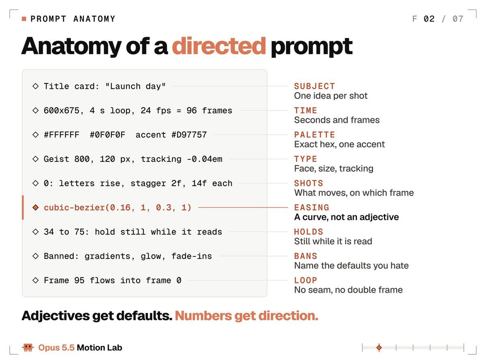
模板。按回车之前把每一行都填上：
GOAL: what the viewer should feel or do, in one sentence
OUTPUT: one self-contained HTML file (or Remotion, HyperFrames), W x H
TIME: seconds x fps = total frames. Loop: yes or no
LOOK: palette in hex, one accent, typeface + weight + size + tracking
MOTION: easing as cubic-bezier, springs as damping ratio, durations in frames
SHOTS: frame ranges, one hero move per shot, how each shot hands off
BANNED: the defaults you never want to see
QA: stills at named frames, a contact sheet, fix, then the full render（译：GOAL 一句话说清观众应该感受到或做什么；OUTPUT 一个自包含 HTML 文件（或 Remotion、HyperFrames），宽 x 高；TIME 秒数 x 帧率 = 总帧数，是否循环；LOOK 十六进制配色、一个强调色、字体+字重+字号+字距；MOTION 缓动用 cubic-bezier、弹簧用阻尼比、时长用帧数；SHOTS 帧区间、每个镜头一个主角动作、镜头之间如何交接；BANNED 你永远不想看到的默认项；QA 指定帧的静帧、一张联系表、修复，然后完整渲染。）
实验 1 中的提示词 B 就是把这个模板填满，再加上 3D 用的 MODEL 和 CAMERA 两行。
先写 GOAL。如果你无法用一句话说清观众应该感受到或做什么，Opus 就没法把它做成动画，再好的缓动曲线也救不了。然后写 TIME，因为其他所有数字都挂在帧数上。
SHOTS 是故事所在。给每个镜头一个帧区间、一个主角动作和一种交接：踩在节拍上的硬切、一个形状变成下一个形状的匹配剪辑，或者遮罩擦除。默认用硬切。转场应当是一个决定。
QA 这一行比看上去重要。它让 Opus 在渲染整段之前先检查静帧，而这正是下文实验室循环的起点。
实验室起步用的动效禁用清单：
- 紫色或蓝色渐变、辉光、镜头光晕
- 作为装饰的漂浮粒子
- 所有东西同时淡入
- 每个元素都淡入并上滑（Anthropic 的 frontend-design 技能称之为一眼 AI 生成的通用默认）
- 一切居中的布局
- 正在被阅读时还在移动的文字
让这份清单保持生长。每次首次渲染之后，点名模型仍然用了什么，并把它加进去。这是 Anthropic 自己的建议，它在动效上和在网页上一样管用。
每个镜头一个主角。同一个技能说得好：一个精心编排的时刻，比四散的特效更有力。其他一切要么等待，要么暗到 40%，要么静止不动。
然后给其余动作排个位次。次要动作的位移是主角的 50% 到 70%，比主角晚 100 到 200 毫秒开始。环境动作保持在主角位移的 5% 以内，跑在缓慢的正弦波上，且永不停止。
趋势解读帖达到约 60 万播放的 Rexan Wong 说：“你给它的上下文，才是让它看起来专业的东西。”
动效数字速查表
动效设计师用曲线和帧来交流，那就给 Opus 5.5 曲线和帧。以下是这些数字及其出处。
缓动。下列数值来自 Andrey Sitnik 的标准 Easings 参考。
| 名称 | cubic-bezier | 用途 |
|---|---|---|
| ease-out-expo | 0.16, 1, 0.3, 1 | 文字与标志的揭示 |
| ease-out-quint | 0.22, 1, 0.36, 1 | 高级感入场 |
| ease-in-out-quart | 0.76, 0, 0.24, 1 | 位移与摄影机推进 |
| ease-in-expo | 0.7, 0, 0.84, 0 | 快速退场 |
| ease-out-back | 0.34, 1.56, 0.64, 1 | 带过冲的俏皮弹出 |
规则：入场用 ease-out，退场用 ease-in 并比入场短 40% 到 50%（Material 3 把 400 毫秒入场配 200 毫秒退场），横跨屏幕的移动用 ease-in-out。线性只用于旋转、进度条和循环的相位。位移用线性缓动，是让渲染看起来像渲染的最快方式。
弹簧。每个库给参数起的名字都不同。有一个数字可以在它们之间通用换算：阻尼比（公式见下方代码）。1.0 永不回弹。0.7 到 0.85 显得高级。0.4 到 0.6 显得俏皮。低于 0.3 就是卡通。
Remotion 的默认弹簧（质量 1、阻尼 10、刚度 100）算出来是 0.5；react-spring 的默认（张力 170、摩擦 26）是 1.0。Material 3 有条规则值得借用：位置和尺寸可以回弹，不透明度和颜色永远不要。
// motion.js: one tokens file, imported everywhere, no inline numbers
export const EASE = {
enter: 'cubic-bezier(0.16, 1, 0.3, 1)', // ease-out-expo
move: 'cubic-bezier(0.76, 0, 0.24, 1)', // ease-in-out-quart
exit: 'cubic-bezier(0.7, 0, 0.84, 0)', // ease-in-expo
pop: 'cubic-bezier(0.34, 1.56, 0.64, 1)' // ease-out-back
};
export const MS = { feedback: 150, move: 400, hero: 750, exit: 240 };
export const STAGGER = { letter: 30, word: 90, item: 60 };
// Damping ratio from any library's numbers: 1 = no bounce
export const dampingRatio = (k, d, m = 1) => d / (2 * Math.sqrt(k * m));
// A spring as a pure function of time, from 0 to 1.
// zeta: damping ratio (1 no bounce, 0.7 premium, 0.5 playful). f: speed in Hz.
export function spring(t, zeta = 0.7, f = 2) {
if (t <= 0) return 0;
const w = 2 * Math.PI * f;
if (zeta >= 1) return 1 - Math.exp(-w * t) * (1 + w * t); // no bounce
const wd = w * Math.sqrt(1 - zeta * zeta);
return 1 - Math.exp(-zeta * w * t) *
(Math.cos(wd * t) + (zeta * w / wd) * Math.sin(wd * t));
}这个弹簧函数不需要模拟。它直接返回任意 t 时的进度，所以第 84 帧可以独立渲染，不必先算第 0 到 83 帧，这正是渲染契约的要求。把这个文件交给 Opus 5.5，附上一句：只用这些 token，不写内联数字。
时长与错峰。UI 反馈 100 到 200 毫秒（Nielsen Norman Group：100 毫秒感觉是即时的）。其余是实验室的起步值：UI 移动 200 到 500 毫秒，主角揭示 600 到 900 毫秒，字母间隔 1 帧，单词 60 到 120 毫秒，列表项 40 到 80 毫秒。在上一个元素完成 30% 到 50% 时启动下一个：完全依次显得机械，全部同时显得廉价。
做视频时用帧来说。24 fps 下一帧约 42 毫秒，所以 400 毫秒的移动是 10 帧，750 毫秒的揭示是 18 帧。
节拍网格。每拍帧数 = fps x 60 / BPM。120 BPM、24 fps 时是 12 帧。128 BPM、30 fps 时是 14.06，所以每一拍都要从时间算出来再各自取整。反复累加取整后的 14 会偏离音乐：32 拍之后就差了 2 帧。
在拍点上剪切，在小节上（每 4 拍）换布局。每一拍都全部变化会让观众疲惫。
停留。屏幕文字至少停留每词 0.3 秒再加 0.5 秒，所以两个词的标题需要 1.1 秒。停留期间做一个 2% 的缓慢推进，让画面保持生气，同时文字依然可读。
摄影机。摄影机运动用最柔和的曲线，比如 ease-in-out-quart；物体用更干脆的曲线。做视差时，前景速度从 1.0、中景 0.5、背景 0.2 起步。
对比度与闪烁。每一帧的文字对比度保持至少 4.5:1，包括在运动背景上，且每秒闪烁不超过 3 次。这两个数字都来自网页无障碍标准 WCAG。
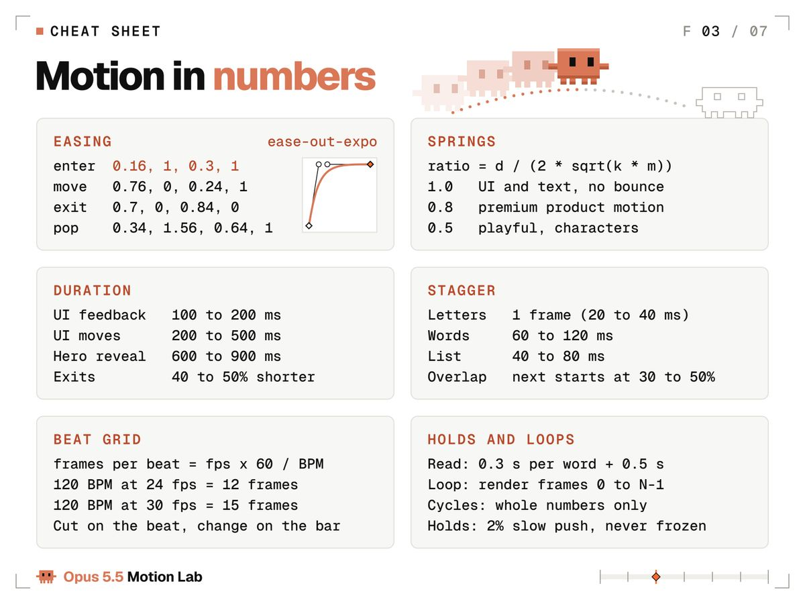
把这张截图存下来。
实验 2：在 3D 吉祥物身上演示五条动画原则
Frank Thomas 和 Ollie Johnston 在《The Illusion of Life》（1981）中写下了迪士尼的 12 条动画原则。其中五条承担了短循环里的大部分工作，而且每一条都能写成帧数和尺寸。这个实验给 Opus 5.5 的是：用体素重建的像素风 Claude 吉祥物、一个微缩影棚，以及纯粹的数字。
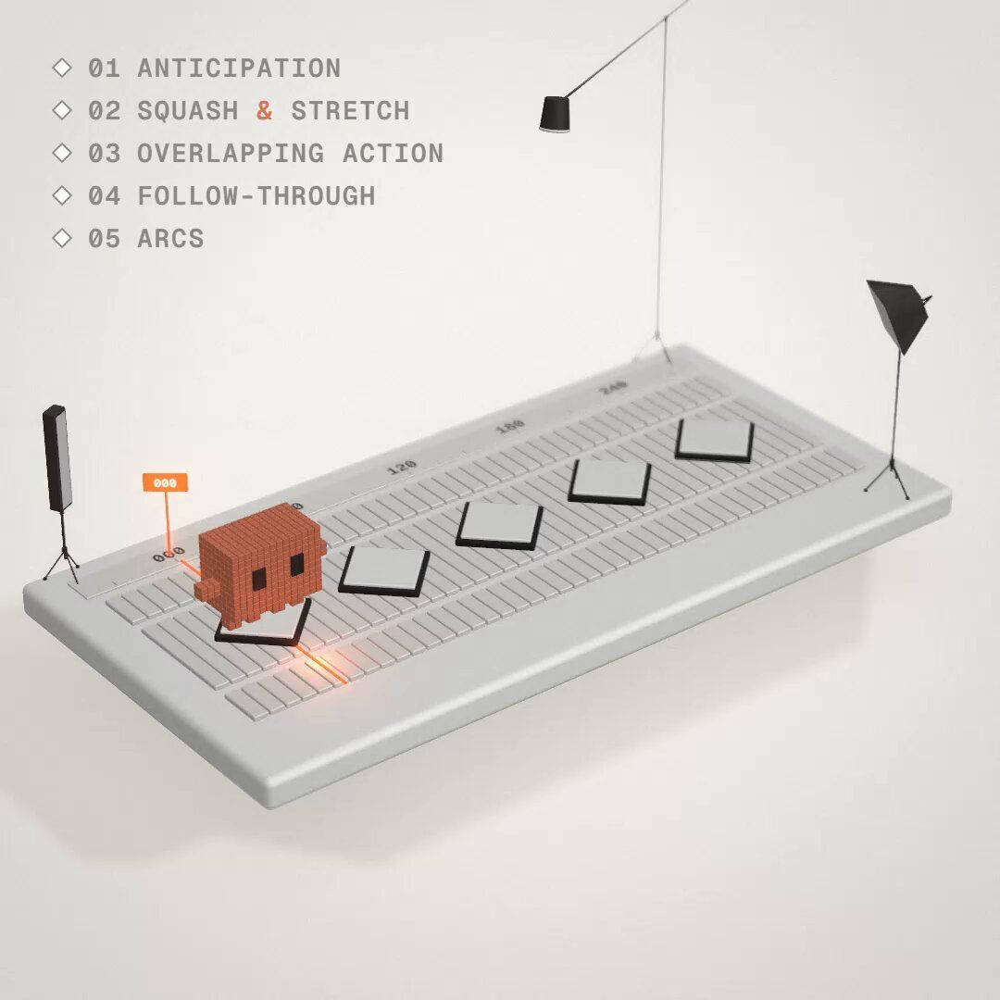
八秒、一次循环：三盏影棚灯依次点亮，吉祥物沿着一块“动效软件时间线”形状的地板从一个垫子跳到下一个，然后沿一条虚线弧翻回第一个垫子。每条原则的标签在它发生的那一帧亮起，一个播放头标签追踪着帧号。它用 three.js 搭建，在 GPU 上以 60 fps 渲染，运动模糊由子帧混合而成。
原样提示词：
Build a 3D animation-principles loop. One HTML file, three.js 0.160.0 via jsDelivr importmap, Geist Mono from Google Fonts. 1080x1080, 8 s at 60 fps (480 frames), frame 480 equals frame 0. window.renderAt(t) draws any frame from t alone; seeded random only.
Set: a miniature studio. A floating white 12x6 slab on an F4F2EE backdrop. Its top is a timeline: 3 tracks of 0.25 frame cells (EFEEEA), a ruler with frame numbers, 5 keyframe diamonds 2 units apart on the middle track (white fill, 0F0F0F outline). Around it on stands: a key softbox, a rim strip light, a top spot on a boom.
Hero: the pixel Claude mascot as 0.1 voxels: D97757 body 14x10x8, two 3x2 arms, four 2x3 legs, 0F0F0F 2x3 eyes; roughness 0.45, clearcoat 0.3.
Lights, 0 to 1 s: key 3200 K with soft shadows at 0.1 s, rim 7500 K at 0.4 s, top spot 5000 K at 0.7 s. Each clicks on with a 3-frame flicker, and the mascot's eyes glance at it.
Hops, 1 to 5 s: 4 hops to diamonds 2 to 5, landing on frames 105, 165, 225 and 285. Each hop: 11-frame crouch (1.2x0.75), stretch 0.85x1.28 at takeoff, 25 frames of air, squash 1.25x0.7 on landing, spring back at damping 0.55; arms lag 4 frames, legs 6. Each landing lights its diamond FF6A2B, ripples the cells 0.08 high and throws 12 voxel sparks. An FF6A2B playhead carrying a point light moves at constant speed and crosses each diamond on its landing frame.
Flip, 5 to 6.4 s: a dotted arc from diamond 5 back to diamond 1 draws in, then an 18-frame deep crouch and a 360° flip along the arc, 3.5 high, landing on frame 384 while the playhead rewinds under it.
Labels, top left, Geist Mono 28 px: a checklist 01 ANTICIPATION, 02 SQUASH & STRETCH (& in D97757), 03 OVERLAPPING ACTION, 04 FOLLOW-THROUGH, 05 ARCS, in 8E8A83. Each row turns 0F0F0F and fills its FF6A2B diamond on its exact frame: 69 (first crouch), 140 (stretch), 200 (limbs trail), 285 (arms settle), 303 (arc draws).
End: hold, blink at 7.2 s; on frame 468 the lights, diamonds and labels snap off.
Camera: FOV 18, 30° elevation, ±10° orbit over 8 s, 25% push-in tracking the hops, 4% punch-in on the flip landing.
Post: bloom on emissives, depth of field focused on the mascot, 2% grain, 10% vignette, dithered backdrop.追加指令：4 条，下面原样印出。第一版就已经包含提示词列出的一切：体素吉祥物、时间线、5 个菱形关键帧、播放头、3 个灯架、标签、弧线和翻转。追加指令修的是外观和构图：调色发灰，道具穿过标签区，轮廓灯被侧面看到，顶灯点亮不明显。另外，一个数值审计在全部 480 帧上读取实时场景并与提示词中的数字比对：共 71 项检查，从第 432 帧的眨眼到双脚踩上每个垫子。第一次运行有 6 项不通过，6 项全部在最终渲染前修好。
1. The render is washed out and cramped. Grade so the lit front face reads D97757 and lit diamonds read FF6A2B; drop the fill so lights-off sits near 50% and each click is obvious; lower the key to 28 degrees from the front right and put the cool rim at the back left so it edges the side we see. Pull the wide shot back to 44 units so the whole floating slab and all three stands are in frame, add a soft shadow under the slab, and make sparks 0.075 to 0.12 and ruler numbers bigger.
2. Frame check fixes. Keep every prop out of the label block: track the hops at 45% and hang the top spot at 5.8 on a boom from the back right corner, above the flip. Light each lit diamond with a soft glow from its face, move the playhead light to the front edge of the track and run its line under the diamonds. Start the dotted arc above the mascot's head, keep every tripod foot on the slab, and give the arms a bigger, slower settle (2.2 Hz, damping 0.22) so the follow-through reads.
3. Turn the rim strip's panel toward the camera so its click reads.
4. Make the top spot's click read too: narrow it to a 34 degree pool at 45 cd and give the lamp a glowing lens rim.声音，同样规则的又一条提示词。声音不需要追加指令：第一版就已经符合提示词里的数字。技术性修复，比如一个以满音量起步的 Web Audio 增益节点、一个带来 6 毫秒延迟的压缩器，另行记录。
# Sound prompt
Score this 8 s loop, 480 frames at 60 fps. Synthesize everything in code with the Web Audio API, no samples, no downloads. 120 BPM, 4 bars, F major. Each hit lands 1 frame after its visual event.
Bed: pad voices A3 E4 (key light), C5 (top), G5 (rim), each following its light's flicker. Shaker 8ths from 45, kick and bass from 60, roots F D Bb F by bar; kick and shaker rest 330 to 420, bass holds C, then F at 384.
Clicks: lights 6, 24, 42, off 468.
Crouches 69, 129, 189, 249, 312: creak, inhale riser.
Takeoffs 80, 140, 200, 260, 330: upward swish.
Landings 105, 165, 225, 285, 384: rubber squash pitched by the squash scale, spark tings, 384 biggest.
Label pings A5 C6 D6 F6 A6: 69, 140, 200, 285, 303.
Dot ticks 303 to 318, flip whoosh 330 to 384, blink blip 432.
48 kHz stereo WAV, about -14 LUFS, peak -1 dBTP, seamless loop, mux into the MP4.结果：从第一条提示词到完成循环约 2 小时（含渲染），声音另外约 70 分钟。71 项检查全部通过：每个标签都在印出的帧上亮起，每次落地都在计划的帧上踩到垫子。
清单上的五条原则，加上随每个动作附带的两条，按提示词的写法写出来：
| 原则 | 作用 | 在提示词里写成 |
|---|---|---|
| 预备动作 | 动作前先蓄力 | 11 帧下蹲（1.2x0.75） |
| 挤压与拉伸 | 表现重量与速度 | 起跳时拉伸 0.85x1.28，落地时挤压 1.25x0.7 |
| 重叠动作 | 四肢比身体晚启动 | 手臂滞后 4 帧，腿 6 帧 |
| 跟随动作 | 身体停下后部件继续运动 | 手臂以 2.2 Hz、阻尼 0.22 回稳（追加指令 2） |
| 弧线 | 让运动显得自然 | 沿 3.5 高的虚线弧翻转 |
| 慢入慢出 | 加速并柔和地停下 | 以阻尼 0.55 弹回 |
| 时间节奏 | 帧数决定重量 | 每跳滞空 25 帧，翻转前下蹲 18 帧 |
标签同时是一种测试。提示词把每个标签钉在一帧上（69、140、200、285 和 303），所以一个迟到的动作会在屏幕上表现为标签先于动作亮起。
提示词还写明了什么不许变。吉祥物严格保持其像素比例：14x10 的身体、3x2 的手臂、2x3 的腿和 2x3 的眼睛，由 0.1 的体素构成，深 8 格。这一行就是让角色在 3D 中依然可辨认的护栏。你在乎的每一种风格都需要这样一行。
布景本身就是课程。动效软件显示关键帧和播放头，好让动画师检查时间。在这里它们是地板，播放头在每次落地的那一帧恰好经过对应的菱形。在你自己的作品里，迭代时让 Opus 加上播放头和帧标签，最终渲染时再关掉。
十二条原则中的其余几条依然适用。舞台调度（staging）就是提示词解剖里的“一个主角”规则。夸张在手机尺寸上更重要：把关键姿势比你觉得合适的再推远 10% 到 30%，因为信息流会把一切都缩小。
实验室循环：渲染、观察、修复
第一次渲染只是草稿。把它做完的循环是：渲染静帧，看它们，写带帧号的意见，修复，只重新渲染改动的部分。两到四轮是常态。
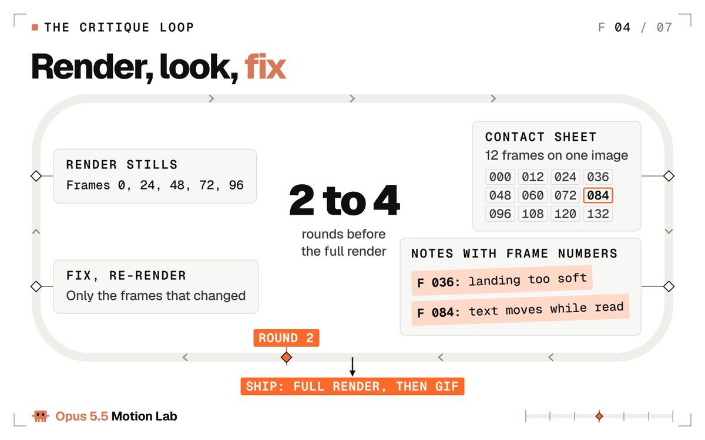
让这个循环变便宜的技巧：用 URL 冻结任意一帧。把下面这段粘在 body 结束标签之前，打开 anim.html?t=2.5，你看到的就是 2.5 秒处的精确帧。Opus 可以截图并读取它。
<script>
// Paste right before </body>. Open anim.html?t=2.5 to see the exact frame at 2.5 s.
(function () {
var q = new URLSearchParams(location.search);
if (!q.has('t')) return;
var t = parseFloat(q.get('t')) || 0;
function freeze() {
if (typeof window.renderAt === 'function') window.renderAt(t);
document.getAnimations().forEach(function (a) { a.pause(); a.currentTime = t * 1000; });
}
freeze();
if (document.fonts && document.fonts.ready) document.fonts.ready.then(freeze);
window.addEventListener('load', freeze);
})();
</script>要一次看完整段，联系表把 12 帧放在一张图上。Opus 会像读分镜一样读它：
# Contact sheet: every 12th frame, 4 across, 3 down
ffmpeg -framerate 24 -i out/frames/%04d.png -vf "select='not(mod(n\,12))',scale=400:-1,tile=4x3" -frames:v 1 out/contact.png借自动画师的两种视图能让意见更精准。洋葱皮把多帧以低不透明度叠在一起：间距均匀说明运动机械，靠近关键帧时间距收紧说明缓动起作用了。速度图逐帧绘制位置：直线是线性运动，尖角是生硬的起停。Opus 5.5 两种都能画、也都能读。
效果最好的追加指令，可直接粘贴。每一条都指向帧，而不是感觉：
Render stills at frames 0, 24, 48, 72 and 96. Describe each in one sentence as a viewer would. Does that match the shot list? Fix what does not.
Make a contact sheet of every 12th frame. Mark every frame where two things move at once, then fix the hierarchy.
Onion-skin frames 24 to 47 at 25% opacity. Spacing should tighten near the keys. Adjust the easing until it does.
Plot the hero's x position and scale per frame as a PNG chart. Show me where the motion is linear or stops dead, then fix it with our tokens.
Review this like a senior motion designer: 10 notes ordered by impact, each with a frame number and the exact code change. Apply the top 5.
It is too busy. Remove 30% of the motion and keep only the moves that guide the eye.
The ending is abrupt. Add a 36-frame hold with a 2% push, then let it settle on a spring at damping ratio 0.8.（译：① 渲染第 0、24、48、72、96 帧的静帧，以观众视角各用一句话描述，是否符合镜头表？不符的修掉。② 做一张每 12 帧一张的联系表，标出每一处两个东西同时运动的帧，然后修正主次。③ 以 25% 不透明度对第 24–47 帧做洋葱皮，靠近关键帧时间距应收紧，调缓动直到如此。④ 把主角的 x 位置和缩放逐帧画成 PNG 图表，指出哪里是线性或生硬停止，然后用我们的 token 修正。⑤ 以资深动效设计师身份评审：按影响排序 10 条意见，每条带帧号和确切代码改动，执行前 5 条。⑥ 太忙了，去掉 30% 的运动，只保留引导视线的动作。⑦ 结尾太突兀，加一个带 2% 推进的 36 帧停留，然后以阻尼比 0.8 的弹簧落定。）
每轮挑一两条。一次贴七条，修复就变成了重写。
当一条意见以感觉的形式到你手里，发出去之前先翻译：
- “让它更跳”：缩放 1.0 到 1.08 再回 1.0，历时 6 帧，峰值踩在拍点上。
- “让它更高级”：入场用 ease-out-quint，弹簧阻尼比 0.8，文字不过冲。
- “它拖沓”：每个停留缩短 12 帧，即 120 BPM、24 fps 下的一拍，这样每个剪切都还在网格上。
- “它太忙”：一次只有一个主角动作；其余晚 150 毫秒启动，位移为其 60%。
- “它看起来像 AI”：按名字列出它用了哪些默认项，逐一禁用，重新渲染。
实验室的收据，直接取自日志：
| 实验 | 提示词词数 | 创意追加指令 | 帧数 |
|---|---|---|---|
| 开场镜头，液态铬 | 416 | 10 | 360 |
| 实验 1，模糊侧 | 27 | 0（有意为之） | 360 |
| 实验 1，导演侧 | 448 | 15 | 360 |
| 实验 2，3D 吉祥物 | 399 | 4 | 480 |
创意追加指令指任何改变作品外观或运动方式的意见。技术修复，比如捕获钩子或字体加载，也有记录，但在另一份清单里，不计入这里。
声音最后做，每个作品一条照着帧号写的提示词：铬循环 5 条声音追加指令，实验 1 有 12 条，吉祥物 0 条，都和各自的视频一起印出。
别人的数字，一旦诚实起来，看上去也是一样的。
Miles（@uxmiles）：As a design studio founder, I hate to admit it but Opus 5.5 is insanely good at motion design/launch videos. This video took 3 prompts…
在 X 上查看该帖 ↗
Miles 经营一家设计工作室。他的发布视频用了 3 条提示词，播放超过 59 万，他说 Opus 5.5 在动效设计上“好得离谱”。专业的人会数提示词，而 3 是个好数字。
Vox（@Voxyz_ai）：I asked Opus 5.5 to explain gravitational lensing by building an interactive black hole lab One prompt for the first version, then a dynamic workflow to polish it for three rounds while I slept. This…
在 X 上查看该帖 ↗
Vox 让 Opus 5.5 解释引力透镜：一条提示词，然后三轮通宵打磨，全程 5 小时 28 分钟，按 API 价格约 90 美元。打磨的轮次才是产品本身。
数一数你的追加指令，把每条提示词都和作品一起发出来。收据让人信服；“一个提示词”让人起疑。
实验室器材：选择你的引擎
Opus 5.5 可以为下面每一种引擎写代码。在提示词里点名你要哪一种，否则它会替你选。
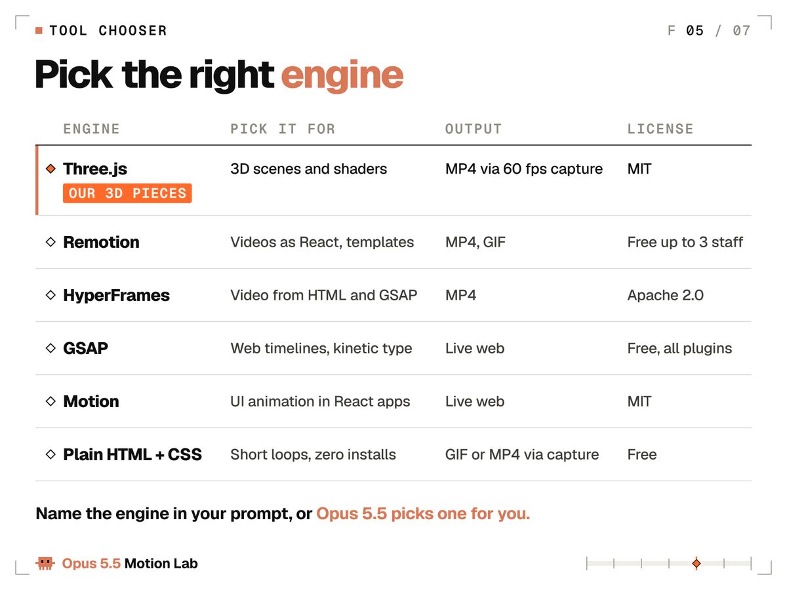
Three.js 是本实验室三个展示作品所用的：基于 WebGL 的 3D 场景、灯光、材质和着色器，由 GPU 绘制（r186 于 9 月 24 日发布）。做视频时，用帧号驱动时间，永远不要用时钟。也给摄影机数字：35 到 50 度的视场角是不错的起点。
Remotion 把视频变成 React 组件，逐帧精确，并为 Claude Code 提供官方 Agent Skills。个人和不超过 3 名员工的公司免费；更大的公司需要公司许可证。
HyperFrames（HeyGen 出品）于 2026 年 4 月 17 日以 Apache 2.0 协议开源。智能体编写 HTML、CSS 和 GSAP 时间线，由它的 CLI 渲染 MP4。没有公司许可证规定。
GSAP 是网页的时间线库，现已 100% 免费，包括 SplitText、MorphSVG、DrawSVG 和 ScrollTrigger。其许可证只禁止用它做一个与 Webflow 竞争的无代码动画构建器。
Motion（原 Framer Motion）以 MIT 许可证为 React 应用制作动画。它为实时界面做动画，没有视频渲染器。
纯 HTML 和 CSS 无需任何安装，覆盖 10 秒以内的 2D 循环：文字、形状和 UI。上面的渲染器会把它转成 GIF 或 MP4。
# Remotion: video as React components
npx create-video@latest # pick a template, name it my-video
cd my-video
npm i
npx remotion skills add # Agent Skills for Claude Code
npm run dev # Remotion Studio in your browser
npx remotion render MyComp out/video.mp4 # MyComp = your composition id
# HyperFrames: HTML + GSAP in, MP4 out (needs Node 22+ and FFmpeg)
npx hyperframes init my-video
cd my-video
claude plugin marketplace add heygen-com/hyperframes
claude plugin install hyperframes@hyperframes
npx hyperframes preview
npx hyperframes render实验室的经验法则：10 秒以内的一个想法，用纯 HTML。系列、模板或数据驱动的视频，用 Remotion。如果你用网页和 GSAP 思考，用 HyperFrames。任何 3D，用 Three.js。而当动效存在于产品之中而非视频里，用 Motion 或 GSAP。
然后把引擎连同它的数字写进模板的 OUTPUT 行。“一个 Remotion 合成，1920 x 1080，30 fps，450 帧”不给 Opus 留任何猜测空间。
Chubby♨️（@kimmonismus）：I wanted to quickly create a short video with Opus 5.5 about the history of AI, from "Attention is all you need" to AGI. No stock footage, no image or video generators: every frame is rendered from c…
在 X 上查看该帖 ↗
Chubby 的 3 分钟 AI 简史：“每一帧都由代码渲染”，用 Claude Code 和 Remotion 制作，约 7400 行 React 和 TypeScript，没有素材库画面，没有图像或视频生成器。约 19.6 万播放。同样的方法可以从 6 秒循环扩展到 3 分钟的短片。
Meng To（@MengTo）：Opus 5.5 is next level. I’m genuinely impressed by the three.js details. I generated a playable boat scene through Japanese landscapes with dynamic weather, day and night lighting, realistic textures…
在 X 上查看该帖 ↗
Meng To 的可游玩游船之旅，穿行日本风景，有天气、昼夜和水面反射，用 Three.js 搭建，约 47.3 万次观看。作品是 3D 时，点名 Three.js，让 Opus 去搭场景。
最后一公里：声音、循环与为 X 导出
教程通常跳过的部分，也是观众最先注意到的部分。
声音。信息流默认静音播放视频，直到有人点开，所以画面必须先在无声状态下成立。加声音时，混合音乐与音效，响度归一化到 -14 LUFS（网页视频常用的响度目标），并让每个视觉冲击点比它的声音早 1 帧，绝不能晚。
声音先于画面到达，比稍晚一点到达更早让人觉得不对。现实也是同样的顺序：光比声音快。
三段实验室视频精确到采样点地遵循这条规则：每个声音都在代码中用 Web Audio API 合成，每个音效的峰值都在对应画面之后 1 帧，混音到 -14 LUFS，峰值 -1 dBTP。Opus 5.5 听不见，所以它通过解码最终的 MP4、把每个音效与其帧对齐来检查同步。
# Music + sound effects, mixed, normalized to -14 LUFS, muxed under the picture
ffmpeg -i out/anim.mp4 -i music.wav -i sfx.wav -filter_complex "[1:a][2:a]amix=inputs=2:duration=first,loudnorm=I=-14:TP=-1:LRA=11[a]" -map 0:v -map "[a]" -c:v copy -c:a aac -b:a 192k -shortest -movflags +faststart out/final.mp4循环。渲染第 0 到 N-1 帧，绝不渲染第 N 帧。第 N 帧就是又一次的第 0 帧，显示两次就是人们在接缝处看到的卡顿。用 phase = frame / N 驱动每个循环，并且用整数个周期。
一个每次循环恰好转 90 度的方块，或一个恰好完成 2 个周期的波，都会回到它的第一帧。要做有机漂移，就沿一个圆采样噪声，这样它会回到起点。
还要让第 0 帧本身就是一个完成的构图。GIF 加载时它是屏幕上第一个出现的东西。
导出。帖子用 MP4，X 长文和内嵌循环用 GIF。整段 GIF 用同一个调色板，可以防止颜色逐帧闪烁。
# MP4 for an X post: H.264 High, yuv420p, starts playing at once
ffmpeg -framerate 24 -i out/frames/%04d.png -c:v libx264 -profile:v high -pix_fmt yuv420p -crf 18 -movflags +faststart out/anim.mp4
# GIF for an X Article: one palette for the whole clip, 1200 px wide
ffmpeg -framerate 24 -i out/frames/%04d.png -vf "scale=1200:-1:flags=lanczos,split[a][b];[a]palettegen=stats_mode=diff[p];[b][p]paletteuse=dither=bayer:bayer_scale=5:diff_mode=rectangle" -loop 0 out/anim.gif
# Loop check: play it three times back to back and watch the seam
ffmpeg -stream_loop 2 -i out/anim.mp4 -c copy out/loop_check.mp4重要的 X 限制，来自 X 的媒体文档和帮助中心：
| 规格 | GIF | 视频 |
|---|---|---|
| 大小限制 | 15 MB | 无 Premium 时 140 秒 |
| 画面尺寸 | 最大 1280 x 1080 | 16:9 为 1920 x 1080 |
| 帧数与帧率 | 最多 350 帧 | 最高 60 fps |
| 格式 | 单一调色板，无限循环 | H.264 High、yuv420p、AAC 音频 |
| 实验室默认 | 1200 px 宽，24 fps | CRF 18，faststart |
24 fps 下，350 帧的上限意味着 GIF 最长约 14.5 秒。4 到 6 秒的循环是 96 到 144 帧，远在上限之内。
GIF 导出的一个时间陷阱：帧延迟以百分之一秒存储，所以 24 fps 的一帧（41.7 毫秒）无法精确存储。把每帧都取整成 40 毫秒，循环就会快 4%，偏离你的节拍网格。解决办法：五帧 40 毫秒，然后一帧 50 毫秒，这样 6 秒循环正好是 6.00 秒。
在第一帧之前就选好画布，因为之后再改意味着每个镜头都要重新导演。常用尺寸：16:9 为 1920 x 1080，1:1 为 1080 x 1080，4:5 为 1080 x 1350，9:16 为 1080 x 1920。X 接受 1:3 到 3:1 之间的视频。
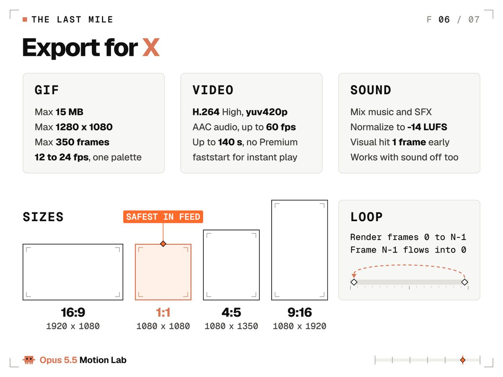
Leon Lin（@LexnLin）：I asked Claude Code (Opus 5.5) to make a launch video for a fake calendar app and HOLY fuck, everything you see AND hear is code ONE prompt, it cooked for about 8h name, logo, UI, animations, soundtra…
在 X 上查看该帖 ↗
Leon Lin 让基于 Opus 5.5 的 Claude Code 为一个虚构的日历应用做发布视频：名字、标志、UI、动画、配乐和音效，全在代码里，一条提示词，约 8 小时。播放超过 8.5 万。声音也可以是代码。
当实验出问题
同样的故障在每个项目里都会回来。下面逐一列出，每个都附修复它的提示词。
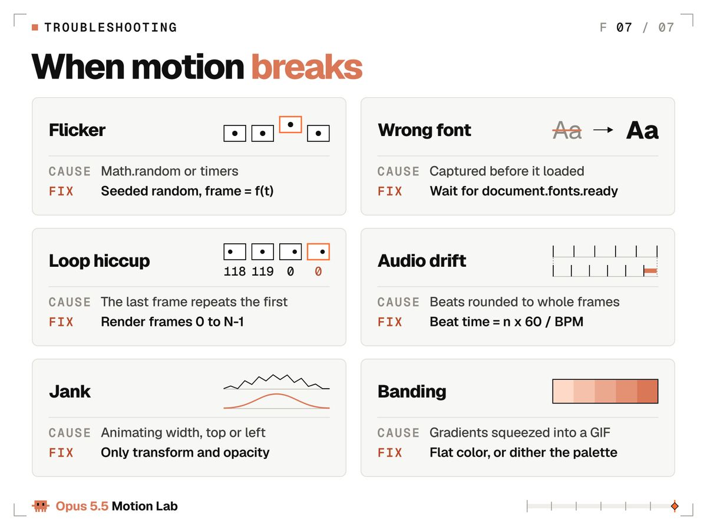
| 症状 | 粘贴这条修复 |
|---|---|
| 闪烁或抖动 | 让每个值都成为 t 的纯函数。用带种子的生成器替换 Math.random。去掉定时器和 CSS 过渡。 |
| 字体错误或回退字体 | 用 display=block 加载字体，在第一帧之前等待 document.fonts.ready。 |
| 循环接缝处卡顿 | 只渲染第 0 到 N-1 帧。用 phase = frame / N 以整数周期驱动循环。 |
| 音频偏离节拍 | 把每一拍算成 n x 60 / BPM 并逐拍取整。永远不要累加取整后的帧数。 |
| 卡顿或掉帧 | 只对 transform 和 opacity 做动画。不要动 width、height、top 或 left。 |
| GIF 出现色带 | 不用渐变。只用纯色，或对调色板做抖动。 |
| 文字模糊或闪烁 | 静止的文字对齐到整像素。以 2 倍渲染再缩小。 |
| 文字还没读完就动了 | 每个文字状态在移动前停留每词 0.3 秒加 0.5 秒。 |
| 所有东西同时在动 | 一次一个主角动作。其余晚 150 毫秒启动，位移为其 60%。 |
如果某个修复没生效，让 Opus 渲染问题两侧的两帧并描述差异。看出两张图之间变了什么，正是它更敏锐的视觉的用武之地。
The fix at frame 84 did not hold. Render frames 83 and 85 as PNGs, put them side by side and list every difference you can see. Find the line of code that causes it, fix only that line, then render both frames again.（译：第 84 帧的修复没有生效。把第 83 和 85 帧渲染成 PNG，并排放置，列出你能看到的每一处差异。找到导致它的那行代码，只修那一行，然后重新渲染这两帧。）
修复生效后，把它加进渲染契约。契约是实验室的记忆：里面的每一行，都是一个你再也不必看到的故障。
实验 3 由你来做
实验室开放了。今晚的实验：
- 复制开场镜头提示词，把其中的文字换成你的产品或你的名字。
- 在 Claude 应用或 Claude Code 中以 medium 强度用 Opus 5.5 运行。
- 渲染第 0、24、48、72 和 96 帧的静帧，写两条带帧号的意见。
- 修复、重新渲染，重复直到你没有意见可写。
- 用 GIF 命令导出，发帖时在第一条回复里附上你的提示词和每一条追加指令。
第一次运行保留所有数字，只改文字。第二次运行一次只改一个数字，这样你能看出每个数字的作用。
模型对每个人都一样。你给它的数字，才是你自己的。
我发布每个新作品都附上原样提示词和每一条追加指令，画面加声音。没有假装的一次成型。关注 @flxrnc，让下一个作品出现在你的信息流里；收藏这篇文章，需要这些数字时它们就在这里。